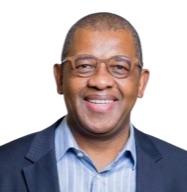

South Africa · Key player

Dali Mpofu
MK Party coalition negotiator
Updated · 6 coalition pieces tracked
Who is Dali Mpofu?
Dali Mpofu (MK Party coalition negotiator) is one of the key players in the coalition talks after South Africa’s 4 November 2026 local government elections.
What has Dali Mpofu said about the coalition talks?
- Says MK’s vote shows voters want cooperation, warns the ANC about its partners, and met the DA for the first time while saying MK wants like-minded partners. Story: MK talks to everyone, the DA included, but says it wants like-minded partners
What is Dali Mpofu’s latest on the coalitions?
On 19 November 2026, MK Party on YouTube: MK’s coalition talks with the ANC, EFF and ActionSA continue. In a video from MK, Mpofu gave an update on the party’s continuing coalition talks with the ANC, EFF and ActionSA, including in eThekwini.
Every piece we track, newest first
MK Party on YouTube · Video MK’s coalition talks with the ANC, EFF and ActionSA continueIn a video from MK, Mpofu gave an update on the party’s continuing coalition talks with the ANC, EFF and ActionSA, including in eThekwini.
YouTube · Video Mpofu confirms Hill-Lewis asked for coalition talksMpofu confirmed that DA leader Geordin Hill-Lewis had asked MK for coalition talks.
SABC News · Video MK’s first meeting with the DAMpofu described MK’s first-ever meeting with the DA as historic and said it had its own significance, but that MK will focus its coalition talks on like-minded parties.
702 · Interview MK Party coalition talks, on 702Mpofu spoke to Mandy Wiener on 702’s Midday Report about MK’s coalition talks.
eNCA · Interview MK Party warns ANC to reconsider coalition partnersMpofu warned that the ANC working with parties whose interests oppose its own could lead to its demise, and said MK did not want the talks to turn into a slanging match.
The Citizen · Statement ‘You wrote off uMkhonto weSizwe’, says Mpofu as party prepares for coalition talksMpofu said MK’s near-10% national vote shows voters want parties to cooperate. He said any deal must rest on shared policy and be concluded within 100 days of a council being set up, with MK’s leadership having the final say, and that at least 120 councils could be hung.
Preamble summarises published reporting and links to every original. Dali Mpofu does not write for Preamble, and this page is not endorsed by them.